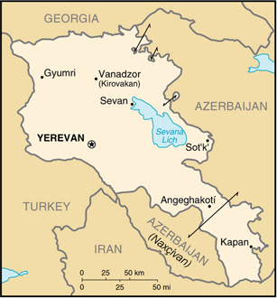

|
Armenia | |
| Introduction Geography People Government Economy Communications Transportation Military Transnational Issues | ||
|  | ||
| Armenia | Introduction | Top of Page |
| Background: | An Orthodox Christian country, Armenia was incorporated into Russia in 1828 and the USSR in 1920. Armenian leaders remain preoccupied by the long conflict with Azerbaijan over Nagorno-Karabakh, a primarily Armenian-populated exclave, assigned to Soviet Azerbaijan in the 1920s by Moscow. Armenia and Azerbaijan began fighting over the exclave in 1988; the struggle escalated after both countries attained independence from the Soviet Union in 1991. By May 1994, when a cease-fire took hold, Armenian forces held not only Nagorno-Karabakh but also a significant portion of Azerbaijan proper. The economies of both sides have been hurt by their inability to make substantial progress toward a peaceful resolution. |
| Armenia | Geography | Top of Page |
| Location: | Southwestern Asia, east of Turkey |
| Geographic coordinates: | 40 00 N, 45 00 E |
| Map references: | Commonwealth of Independent States |
| Area: |
total:
29,800 sq km
land: 28,400 sq km water: 1,400 sq km |
| Area - comparative: | slightly smaller than Maryland |
| Land boundaries: |
total:
1,254 km
border countries: Azerbaijan-proper 566 km, Azerbaijan-Naxcivan exclave 221 km, Georgia 164 km, Iran 35 km, Turkey 268 km |
| Coastline: | 0 km (landlocked) |
| Maritime claims: | none (landlocked) |
| Climate: | highland continental, hot summers, cold winters |
| Terrain: | Armenian Highland with mountains; little forest land; fast flowing rivers; good soil in Aras River valley |
| Elevation extremes: |
lowest point:
Debed River 400 m
highest point: Aragats Lerr 4,095 m |
| Natural resources: | small deposits of gold, copper, molybdenum, zinc, alumina |
| Land use: |
arable land:
17%
permanent crops: 3% permanent pastures: 24% forests and woodland: 15% other: 41% (1993 est.) |
| Irrigated land: | 2,870 sq km (1993 est.) |
| Natural hazards: | occasionally severe earthquakes; droughts |
| Environment - current issues: | soil pollution from toxic chemicals such as DDT; energy blockade, the result of conflict with Azerbaijan, has led to deforestation when citizens scavenged for firewood; pollution of Hrazdan (Razdan) and Aras Rivers; the draining of Sevana Lich (Lake Sevan), a result of its use as a source for hydropower, threatens drinking water supplies; restart of Metsamor nuclear power plant without adequate (IAEA-recommended) safety and backup systems |
| Environment - international agreements: |
party to:
Air Pollution, Biodiversity, Climate Change, Desertification, Hazardous Wastes, Nuclear Test Ban, Ozone Layer Protection, Wetlands
signed, but not ratified: Air Pollution-Persistent Organic Pollutants |
| Geography - note: | landlocked |
| Armenia | People | Top of Page |
| Population: | 3,336,100 (July 2001 est.) |
| Age structure: |
0-14 years:
23.23% (male 394,194; female 380,911)
15-64 years: 67.04% (male 1,094,646; female 1,141,760) 65 years and over: 9.73% (male 135,477; female 189,112) (2001 est.) |
| Population growth rate: | -0.21% (2001 est.) |
| Birth rate: | 11.47 births/1,000 population (2001 est.) |
| Death rate: | 9.74 deaths/1,000 population (2001 est.) |
| Net migration rate: | -3.87 migrant(s)/1,000 population (2001 est.) |
| Sex ratio: |
at birth:
1.05 male(s)/female
under 15 years: 1.03 male(s)/female 15-64 years: 0.96 male(s)/female 65 years and over: 0.72 male(s)/female total population: 0.95 male(s)/female (2001 est.) |
| Infant mortality rate: | 41.27 deaths/1,000 live births (2001 est.) |
| Life expectancy at birth: |
total population:
66.49 years
male: 62.12 years female: 71.08 years (2001 est.) |
| Total fertility rate: | 1.5 children born/woman (2001 est.) |
| HIV/AIDS - adult prevalence rate: | 0.01% (1999 est.) |
| HIV/AIDS - people living with HIV/AIDS: | less than 500 (1999 est.) |
| HIV/AIDS - deaths: | less than 100 (1999 est.) |
| Nationality: |
noun:
Armenian(s)
adjective: Armenian |
| Ethnic groups: |
Armenian 93%, Azeri 3%, Russian 2%, other (mostly Yezidi Kurds) 2% (1989)
note: as of the end of 1993, virtually all Azeris had emigrated from Armenia |
| Religions: | Armenian Orthodox 94% |
| Languages: | Armenian 96%, Russian 2%, other 2% |
| Literacy: |
definition:
age 15 and over can read and write
total population: 99% male: 99% female: 98% (1989 est.) |
| Armenia | Government | Top of Page |
| Country name: |
conventional long form:
Republic of Armenia
conventional short form: Armenia local long form: Hayastani Hanrapetut'yun local short form: Hayastan former: Armenian Soviet Socialist Republic; Armenian Republic |
| Government type: | republic |
| Capital: | Yerevan |
| Administrative divisions: | 10 provinces (marzer, singular - marz) and 1 city* (k'aghak'ner, singular - k'aghak'); Aragatsotn, Ararat, Armavir, Geghark'unik', Kotayk', Lorri, Shirak, Syunik', Tavush, Vayots' Dzor, Yerevan* |
| Independence: | 21 September 1991 (from Soviet Union) |
| National holiday: | Independence Day, 21 September (1991) |
| Constitution: | adopted by nationwide referendum 5 July 1995 |
| Legal system: | based on civil law system |
| Suffrage: | 18 years of age; universal |
| Executive branch: |
chief of state:
President Robert KOCHARIAN (since 30 March 1998)
head of government: Prime Minister Andranik MARKARYAN (since 12 May 2000) cabinet: Council of Ministers appointed by the prime minister elections: president elected by popular vote for a five-year term; special election last held 30 March 1998 (next to be held NA March 2003); prime minister appointed by the president election results: Robert KOCHARIAN elected president; percent of vote - Robert KOCHARIAN 59.5%, Karen DEMIRCHYAN 40.5% |
| Legislative branch: |
unicameral National Assembly (Parliament) or Azgayin Zhoghov (131 seats; members serve four-year terms)
elections: last held 30 May 1999 (next to be held in the spring of 2003) election results: percent of vote by party - NA%; seats by party - unity bloc 61 (Republican Party 41, People's Party of Armenia 20), Stability Group (independent Armenian deputies who have formed a bloc) 21, ACP 10, ARF (Dashnak) 8, Law and Unity Party 7, NDU 6, Law-Governed Party 6, independents 10, unfilled 2; note - seats by party change frequently |
| Judicial branch: | Supreme Court; Constitutional Court |
| Political parties and leaders: | Armenia Party [Myasnik ALKHASYAN]; Armenian Communist Party or ACP [Vladimir DARBINYAN]; Armenian Revolutionary Federation ("Dashnak" Party) or ARF [Hrant MARKARYAN]; Christian Democratic Union or CDU [Azat ARSHAKYN, chairman]; Democratic Liberal Party [Ramkavar AZATAKAN, chairman]; Free Armenian's Mission [Ruben MNATSANIAN, chairman]; Law and Unity Party [Artashes GEGAMIAN, chairman]; Law-Governed Party [Artur BAGDASARIAN, chairman]; Mission Party [Artush PAPOIAN, chairman]; National Democratic Union or NDU [Vazgen MANUKIAN]; National State Party [Samvel SHAGINIAN]; Pan-Armenian National Movement or PANM [Vano SIRADEGHYAN]; People's Party of Armenia [Stepan DEMIRCHYAN]; Republican Party or RPA [Andranik MARKARYAN]; Shamiram Women's Movement or SWM [Gayane SARUKHYAN]; Social Democratic (Hnchakian) Party [Ernst SOGOMONYAN]; Stability Group [Vartan AYVAZIAN, chairman]; Union of National Self-Determination or NSDU [Paruir HAIRIKIAN, chairman]; Unity Bloc [Stepan DEMIRCHIAN and Andranik MARKARYAN] (a coalition of the Republican Party and People's Party of Armenia) |
| Political pressure groups and leaders: | NA |
| International organization participation: | BSEC, CCC, CE, CIS, EAPC, EBRD, ECE, ESCAP, FAO, IAEA, IBRD, ICAO, ICRM, IDA, IFAD, IFC, IFRCS, ILO, IMF, Intelsat, Interpol, IOC, IOM, ISO, ITU, NAM (observer), OPCW, OSCE, PFP, UN, UNCTAD, UNESCO, UNIDO, UPU, WFTU, WHO, WIPO, WMO, WToO, WTrO (observer) |
| Diplomatic representation in the US: |
chief of mission:
Ambassador Arman KIRAKOSIAN
chancery: 2225 R Street NW, Washington, DC 20008 telephone: [1] (202) 319-1976 FAX: [1] (202) 319-2982 consulate(s) general: Los Angeles |
| Diplomatic representation from the US: |
chief of mission:
Ambassador Michael C. LEMMON
embassy: 18 Marshal Bagramian Avenue, Yerevan mailing address: American Embassy Yerevan, Department of State, Washington, DC 20521-7020 telephone: [374] (2) 52-16-11 FAX: [374] (2) 151-550 |
| Flag description: | three equal horizontal bands of red (top), blue, and orange |
| Armenia | Economy | Top of Page |
| Economy - overview: | Under the old Soviet central planning system, Armenia had developed a modern industrial sector, supplying machine tools, textiles, and other manufactured goods to sister republics in exchange for raw materials and energy. Since the implosion of the USSR in December 1991, Armenia has switched to small-scale agriculture away from the large agroindustrial complexes of the Soviet era. The agricultural sector has long-term needs for more investment and updated technology. The privatization of industry has been at a slower pace, but has been given renewed emphasis by the current administration. Armenia is a food importer, and its mineral deposits (gold, bauxite) are small. The ongoing conflict with Azerbaijan over the ethnic Armenian-dominated region of Nagorno-Karabakh and the breakup of the centrally directed economic system of the former Soviet Union contributed to a severe economic decline in the early 1990s. By 1994, however, the Armenian Government had launched an ambitious IMF-sponsored economic program that has resulted in positive growth rates in 1995-2000. Armenia also managed to slash inflation and to privatize most small- and medium-sized enterprises. The chronic energy shortages Armenia suffered in recent years have been largely offset by the energy supplied by one of its nuclear power plants at Metsamor. Armenia's severe trade imbalance, importing three times its exports, has been offset somewhat by international aid, domestic restructuring of the economy, and foreign direct investment. |
| GDP: | purchasing power parity - $10 billion (2000 est.) |
| GDP - real growth rate: | 5% (2000 est.) |
| GDP - per capita: | purchasing power parity - $3,000 (2000 est.) |
| GDP - composition by sector: |
agriculture:
40%
industry: 25% services: 35% (1999 est.) |
| Population below poverty line: | 45% (1999 est.) |
| Household income or consumption by percentage share: |
lowest 10%:
NA%
highest 10%: NA% |
| Inflation rate (consumer prices): | 1% (1999 est.) |
| Labor force: | 1.5 million (1999) |
| Labor force - by occupation: | agriculture 55%, services 25%, industry 20% (1999 est.) |
| Unemployment rate: |
20% (1998 est.)
note: official rate is 9.3% for 1998 |
| Budget: |
revenues:
$360 million
expenditures: $566 million, including capital expenditures of $NA (1999 est.) |
| Industries: | metal-cutting machine tools, forging-pressing machines, electric motors, tires, knitted wear, hosiery, shoes, silk fabric, chemicals, trucks, instruments, microelectronics, gem cutting, jewelry manufacturing, software development, brandy |
| Industrial production growth rate: | 5% (2000 est.) |
| Electricity - production: | 6.668 billion kWh (1999) |
| Electricity - production by source: |
fossil fuel:
45.56%
hydro: 23.25% nuclear: 31.19% other: 0% (1999) |
| Electricity - consumption: | 6.201 billion kWh (1999) |
| Electricity - exports: | 0 kWh (1999) |
| Electricity - imports: | 0 kWh (1999) |
| Agriculture - products: | fruit (especially grapes), vegetables; livestock |
| Exports: | $284 million (f.o.b., 2000 est.) |
| Exports - commodities: | diamonds, scrap metal, machinery and equipment, brandy, copper ore |
| Exports - partners: | Belgium 36%, Iran 15%, Russia 14%, US 7%, Turkmenistan, Georgia (1999) |
| Imports: | $913 million (f.o.b., 2000 est.) |
| Imports - commodities: | natural gas, petroleum, tobacco products, foodstuffs, diamonds |
| Imports - partners: | Russia 17%, US 11%, Belgium 11%, Iran 10%, UK, Turkey (1999) |
| Debt - external: | $836 million (January 2001) |
| Economic aid - recipient: | $245.5 million (1995) |
| Currency: | dram (AMD) |
| Currency code: | AMD |
| Exchange rates: | drams per US dollar - 554.29 (1 February 2001), 539.53 (2000), 535.06 (1999), 504.92 (1998), 490.85 (1997), 414.04 (1996) |
| Fiscal year: | calendar year |
| Armenia | Communications | Top of Page |
| Telephones - main lines in use: | 568,000 (1997) |
| Telephones - mobile cellular: | 6,220 (1997) |
| Telephone system: |
general assessment:
system inadequate; now 90% privately owned and undergoing modernization and expansion
domestic: the majority of subscribers and the most modern equipment are in Yerevan (this includes paging and mobile cellular service) international: Yerevan is connected to the Trans-Asia-Europe fiber-optic cable through Iran; additional international service is available by microwave radio relay and landline connections to the other countries of the Commonwealth of Independent States and through the Moscow international switch and by satellite to the rest of the world; satellite earth stations - 1 Intelsat |
| Radio broadcast stations: | AM 9, FM 6, shortwave 1 (1998) |
| Radios: | 850,000 (1997) |
| Television broadcast stations: | 4 (1998) |
| Televisions: | 825,000 (1997) |
| Internet country code: | .am |
| Internet Service Providers (ISPs): | 1 (1999) |
| Internet users: | 30,000 (2000) |
| Armenia | Transportation | Top of Page |
| Railways: |
total:
852 km in common carrier service; does not include industrial lines
broad gauge: 852 km 1.520-m gauge (779 km electrified) (2001) |
| Highways: |
total:
8,431 km ()
paved: NA unpaved: NA (1997) |
| Waterways: | NA km |
| Pipelines: | natural gas 900 km (1991) |
| Ports and harbors: | none |
| Airports: | 7 (2000 est.) |
| Airports - with unpaved runways: |
total:
7
over 3,047 m: 1 1,524 to 2,437 m: 2 914 to 1,523 m: 3 under 914 m: 1 (2000 est.) |
| Armenia | Military | Top of Page |
| Military branches: | Army, Air Force and Air Defense Aviation, Air Defense Force, Security Forces (internal and border troops) |
| Military manpower - military age: | 18 years of age |
| Military manpower - availability: | males age 15-49: 905,154 (2001 est.) |
| Military manpower - fit for military service: | males age 15-49: 715,734 (2001 est.) |
| Military manpower - reaching military age annually: | males: 34,998 (2001 est.) |
| Military expenditures - dollar figure: | $75 million (FY99) |
| Military expenditures - percent of GDP: | 4% (FY99) |
| Armenia | Transnational Issues | Top of Page |
| Disputes - international: | Armenia supports ethnic Armenians in the Nagorno-Karabakh region of Azerbaijan in the longstanding, separatist conflict against the Azerbaijani Government; traditional demands regarding former Armenian lands in Turkey have subsided |
| Illicit drugs: | illicit cultivator of cannabis mostly for domestic consumption; increasingly used as a transshipment point for illicit drugs - mostly opium and hashish - to Western Europe and the US via Iran, Central Asia, and Russia |
{kind=link}
{kind=link}